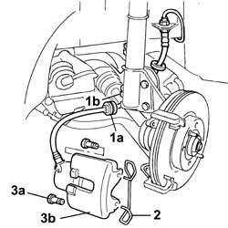
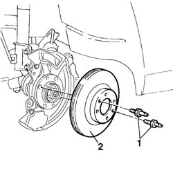

3310A50 front brake discs r r
- Path
- Procedures > 33 BRAKES > 3310 DISC BRAKES > 3310A FRONT DISC BRAKES > 3310A50 front brake discs r r
- Kind
- repair procedure (removal / refitting; the operation number is the code)
- Applies to
- all engines; all production periods
- Interactive page
- https://sloeber94.github.io/elrnDB-fDbl/en/#/2584625
Applies to: all engines; all production periods
 Removing
Removing
 Refitting
RefittingPlace the car on a lift.
4450B12 front or rear wheels (two) - r+r
1. Release the rubber retainer (1a) on the brake pipe from its seating (1b) on the shock absorber.
2. Remove the spring fixing the brake caliper to the bracket.
3. Unscrew the bolts (3a) and move the front brake caliper assembly (3b) aside.

Applies to: all engines; all production periods
3310A57 front brake calliper bracket - r r .
1. Undo the two fixing pins.
2. Remove the front brake discs.

Applies to: all engines; all production periods
Refitting
RemovingPosition the brake discs and fix them with the fixing pins.
 | Fastening | Component | Ø | Value (daNm) |
|---|---|---|---|---|
- | Bolt | FRONT BRAKE DISC. | M8 | 1.2 |
3310A57 front brake calliper bracket - r r .
Fit the front brake calipers to the discs.
Fix the brake calipers, tightening the two rear fixing bolts.
| Fastening | Component | Ø | Value (daNm) |
|---|---|---|---|---|
- | Bolt | FRONT BRAKE CALIPER ASSEMBLY | M10 x 1.25 | 2.5 ÷ 3 |
Fit the caliper fixing spring in the correct position.
Secure the brake pipe to the seat on the shock absorber.
4450B12 front or rear wheels (two) - r+r .
Remove the car from the lift.